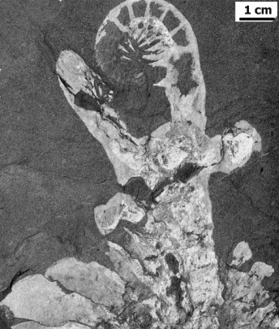
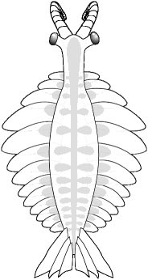
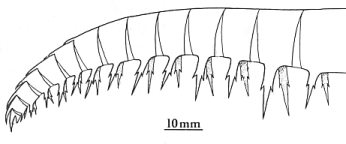
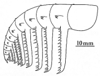
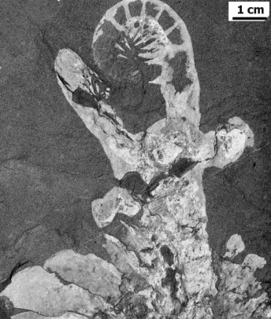
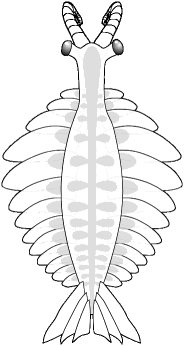

.

Specimen of head and anterior swimming lobes of Laggania cambria

| Home |
· | History 1 |
· | Species 1 | · |
Gallery 1 | · |
Links |
· |
||
| History 2 |
Species 2 | Gallery 2 |
Buy now |
||||||||
| Bauplan | Species 3 | Gallery 3 |
Telegram |
||||||||
| Species 4 | Gallery 4 |
Twitter |
A step toward the truth:
In 1979, Derek Briggs recognized that Anomalocaris
(sensu Whiteaves 1892) was not the body of a shrimp, but an
appendage, and predicted that a large arthropod would be found in the
Burgess Shale bearing the appendages. He recognized two types of
appendages; the Whiteaves Anomalocaris type, and another that
he considered a feeding appendage, "Appendage F." The two appendage
types are shown below:
|  The "strange shrimp" called Anomalocaris canadensis by Whiteaves (1892) was recognized by Briggs (1979) as the appendage of a large arthropod. He envisioned it as the walking leg of a large, superficially centipede-like animal. |
 Briggs thought that this "Appendage F" was the feeding arm of the large arthropod, and belonged in front of the creature. |
The 1981 revelation:
A major breakthrough came in 1981, when Harry
Whittington and Briggs were working on a suite of specimens borrowed
from the Walcott collections. On a specimen of Laggania bearing
Peytoia, they dissected out a pair of the appendages, and
realized that here was the answer to not only the Anomalocaris
appendage problem, but the question on the true nature of Peytoia as
well. The appendages were attached as a single pair at the anterior
end, with a ventral circular mouth (Peytoia) just posterior to
them. The body extending behind consisted of a series of paired
flattened imbricate (overlapping) lobes, tapering backwards toward what
they presumed was a simple posterior. They examined a number of other
similar specimens and were able to dissect out the same combination of
a pair of anterior appendages and a ventral, Peytoia mouth, but
on some of their specimens, the appendages were of Whiteave's Anomalocaris
type, and on others, they were of Brigg's "Appendage F" type.
|
|
They proposed two species, Anomalocaris nathorsti and Anomalocaris canadensis to reflect the two different anterior appendages, but suggested that otherwise, the two species were very similar in body plan. They published their findings as a brief, tentative reconstruction in 1982, then formally and comprehensively in the pivotal paper: "The largest Cambrian animal, Anomalocaris, Burgess Shale, British Columbia." in the Philosophical Transactions of the Royal Society of London in 1985 redescribing Anomalocaris as a 60 cm (2 foot long) predator bearing paired anterior appendages and a toothed, circular ventral mouth. It was (and remains) the largest of all known Cambrian animals.
1996 refinements:
The Anomalocaris concept of Whittington
and Briggs was refined further by Desmond Collins in 1996, who used
recently collected specimens to distingush the two species as members
of two genera, Anomalocaris and Laggania, based not
only on the distinct
feeding appendages, but on differences in body morphology (see below).
| A superb specimen of Anomalocaris canadensis clearly
shows that the head region is narrow, bearing long eyestalks
immediately posterior to the anterior appendages.
 |
This reconstruction of Anomalocaris
canadensis reflects the morphology of the specimen at left, and
includes the fantail found on other specimens.
 |
| In contrast,
specimens
of Laggania cambria are wide-headed with short eyestalks set
far posterior to the mouth. The head outline is parabolic, without
evidence of a narrow neck anterior to the swimming lobes.
. Specimen of head and anterior swimming lobes of Laggania cambria |
This reconstruction of Laggania
reflects the difference in head shape, includes the more fragile
"AppendageF" arm morphology, and has no fantail. It is similar to the
reconstruction of Whittington and Briggs 1985.
|
Over one hundred years passed between the initial description of fossil parts of Anomalocaris canadensis and its recognition as a large, swimming predator of Cambrian ecosystems. The long history of innaccurate reconstructions and identifications exemplifies the great difficulty characterizing from fossil remains, Cambrian animals with no apparent living descendants. During that time, there were several distinct approaches to the conceptual classification of the animals of the Cambrian. Initially, Cambrian fossils were typically described as ancient members of phyla that exist today. This early phase of describing fossils in terms of familiar phyla was superceded by the idea of the Cambrian being the setting for the prolific and rapid generation of classes and phyla (the "Cambrian Explosion") that have gone extinct and cannot be classified as members of modern groups. In that phase, Cambrian "weird wonders" such as Opabinia, Hallucigenia, and Wiwaxia, joined Anomalocaris as examples of taxa without modern surviving descendants, and bearing bauplans so unconventional they deserved phylum status. Gould (1989) championed this viewpoint in his book Wonderful Life. In the 90s, the trend has been to recognize most of the Cambrian "wonders" as members of extant phyla, but often representing extinct classes. Hallucigenia, for example, is now considered a lobopod, akin to Onychophora, while Opabinia and Anomalocaris are considered members of an extinct arthropod class (with some workers still suggesting subphylum or phylum grade).
Anomalocarids as predators:
Rudkin (1979) postulated the existence of a large
Cambrian predator responsible for inflicting observed wounds on
individuals of the trilobite Ogygopsis klotzi. He suggested
that Anomalocaris canadensis was responsible. Whittington and
Briggs (1985) characterized their newly described Anomalocaris
as "a formidable predator" on
the benthic fauna, especially soft-bodied arthropods abundant at the
time.
Most other anomalocarid workers agreed (e.g., Babcock 1993, Collins
1996),
but some (e.g., Hou, Bergstrom & Ahlberg 1995) claimed that
anomalocarid
mouthparts were not hard enough to deal with trilobites. Nonetheless,
the
popular conception of Anomalocaris is as a "trilobite bane,"
and reconstructions
of Anomalocaris in habitat often show it pursuing or feeding on
a
hapless trilobite victim. The paired fearsome impaling spines of the
appendages
of the Chengjiang anomalocarid Amplectobelua symbrachiata also
suggest
a predatory lifesyle, and its large eyes and strong swimming lobes
suggest
it could pursue and subdue just about any of its Cambrian
contemporaries.
Variation in anterior appendages (see discussion below) suggests that
not
all anomalocarids were such formidable predators.
Distribution of anomalocarid fossils:
To date, there are three Anomalocarid genera for
which complete specimens are known (Anomalocaris, Laggania,
and Amplectobelua).
Anomalocarid arthropods have been reported from Cambrian fossil
localities around the world, including the Burgess Shale formation in
Canada, Rocky Mountain states of the U.S., Chengjiang formation in
China, and the Emu Bay Shale formation in Australia. A full review of
the distribution of anomalocaridids by Briggs et al (2008) includes
early Cambrian localities from Laurentia, e.g., California (Briggs
& Mount 1982), Pennsylvania (Briggs 1979), Nevada (Liebermann
2003), and Greenland (Budd 1998); eastern Europe (Dzik & Lendzion
1988), Australia (McHenry & Yates 1993, Nedin 1995), and China
(Chen et al 1996, Hou et al 2004). Middle Cambrian species have been
reported from the Northwest Territories, Canada (Butterfield &
Nicholas 1996), Utah (Briggs & Robison 1984, Conway Morris &
Robison 1988, Robison 1991, Briggs et al 2008), Nevada (Liebermann
2003), and the Kaili biota in China (Zhao et al 2005). Exceptional
fossil preservation (At the Burgess Shale and Chengjiang in
particular), skillful preparators, and comprehensive studies have
revealed much about the palaeobiology of some of these formerly
enigmatic animals, but much still remains to be clarified about their
anatomy, biology and relationships.
Continue to
examine the anomalocarid bauplan...